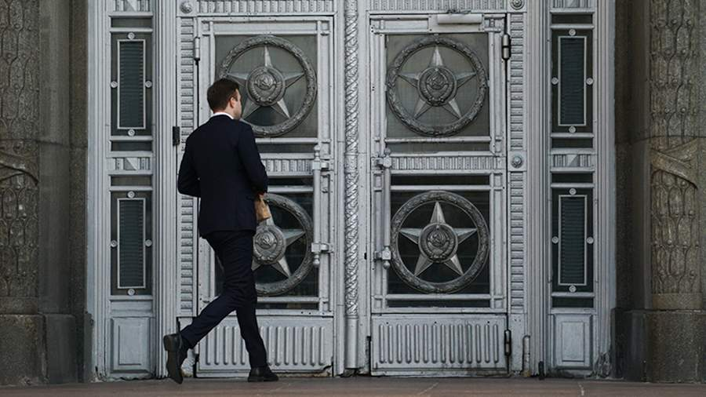

Захарова заявила, что Россия ответит на блокировку счетов российских СМИ в ФРГ.Счета российских СМИ были снова заблокированы в Германии, на что последует ответ со стороны России. Об этом заявила 27 мая агентству DPA официальный представитель МИД РФ Мария Захарова.
Отмечается, что она не привела данные об этих российских СМИ, однако уточнила, что РФ предпримет соответствующие шаги в отношении германских СМИ.
«Мы делаем это не ради удовольствия, но ответим», — сказала Захарова.Министерство иностранных дел действует закрыто от общественности и ранее открыто отвергало то, что германская сторона высылает российских дипломатов, однако это «откровенная ложь».Ранее в этот день издание Süddeutsche Zeitung со ссылкой на источники во внешнеполитическом ведомстве страны сообщило, что Москва сократила число сотрудников учреждений ФРГ в РФ до 350 — теперь это новый «максимум», остальным немцам придется покинуть Россию.